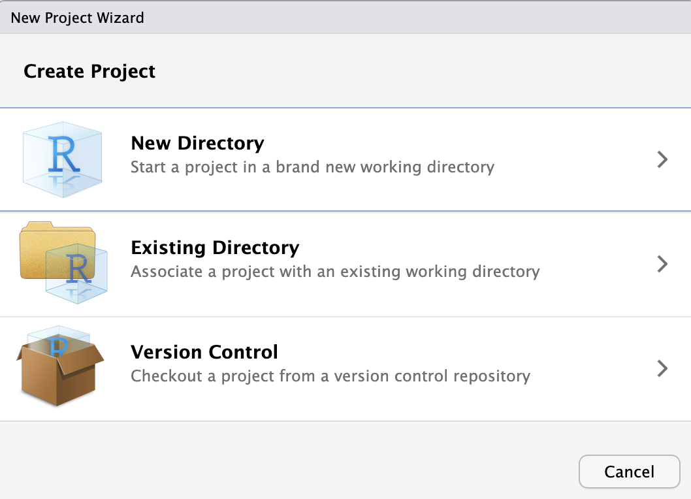
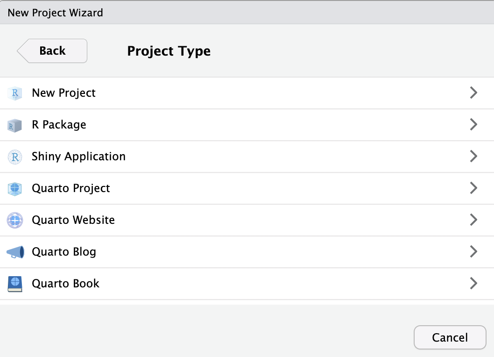
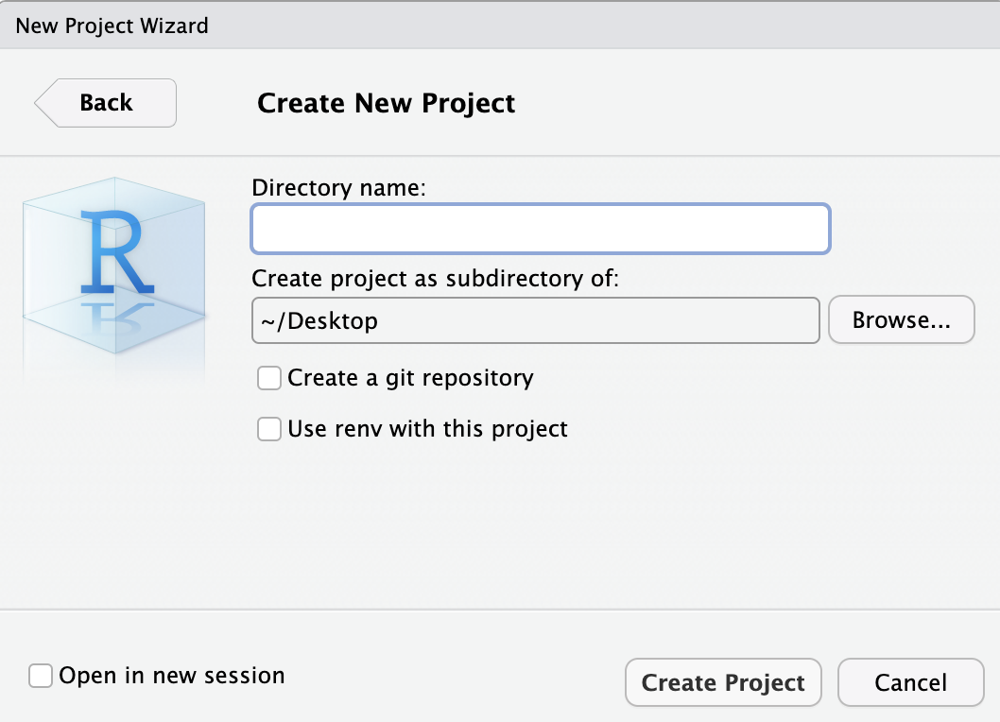
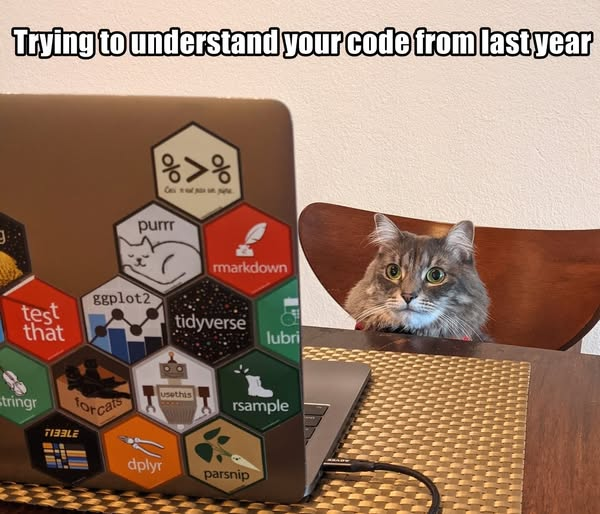
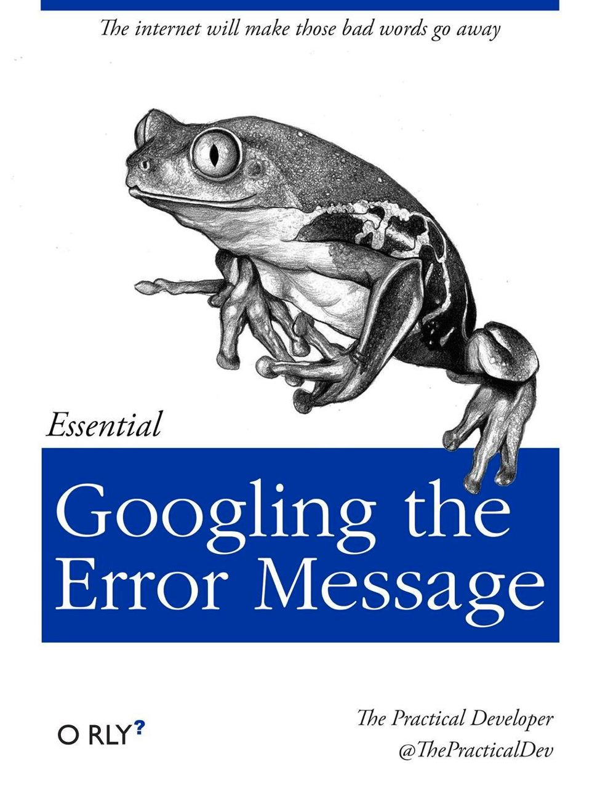
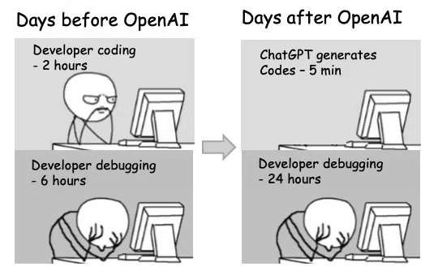
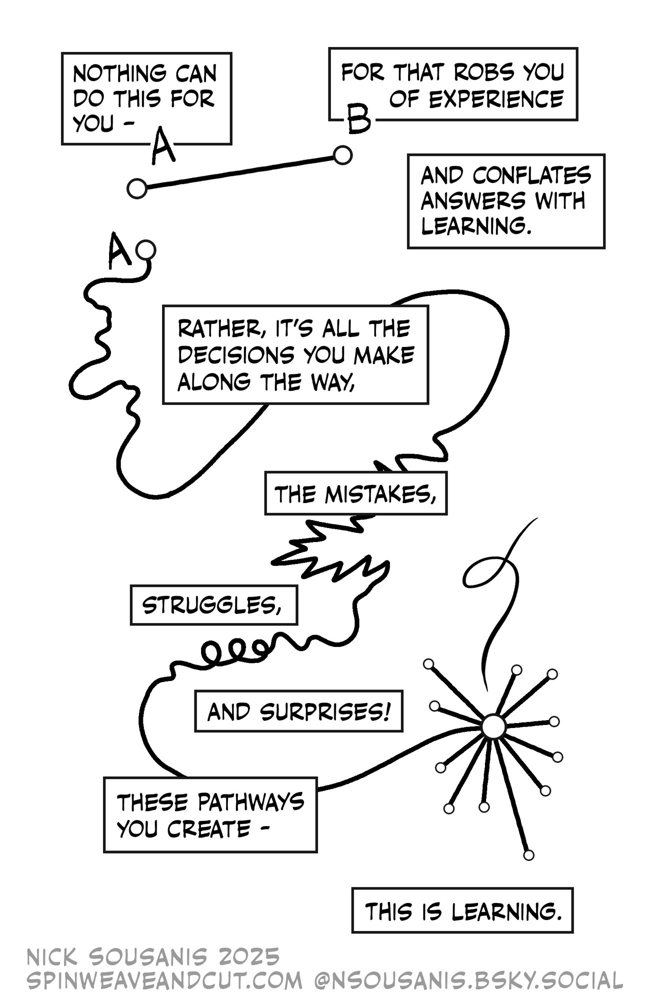

Project Organisation & Coding Principles
Attendance Check-In Code
Enter the attendance code for today’s seminar to log your attendance.
You can log your attendance on iSheffield
Project Organisation
For your mini-project, and in general, you will create a reproducible project. This means you share your data, code, materials, and report.
To make a good reproducible project, you need to make it:
Organise everything from the start and work under the assumption that you will need to revisit or share this information in the future.
RStudio Projects (.Rproj) create a self-contained sandbox for your work. Each project maintains its own isolated working directory, history, and workspace.
Open RStudio and we will create a project.
File > New Project



Every file has a location, called a path, and an extension that denotes the file type.
Mac: ‘/Users/sabrinaburr/Desktop/my_data.csv’
PC: ‘C:\Users\sabrinaburr\Desktop\my_data.csv’
When naming files:
For more naming advice, read Jenny Bryan on Naming Things
The working directory is where RStudio first looks for files and where it saves output.
If you’re working outside of a project, you can set your working directory manually:
Session > Set Working Directory >
You can also set the working directory using the command setwd('path/to/your/directory')
When you call files in an RStudio project, you don’t need to provide the full path, provided the files are stored in the project directory (i.e., the folder).
Bad for reproducibility:
ggsave('Users/sabrinaburr/Desktop/Projects/MyProject1/Figures/graph1.png)
Better for reproducibility:
ggsave('Figures/graph1.png)
It’s best to write R code assuming the script is run from the same folder it is saved in.
Sometimes, even with organised files, you might run into issues, such as trying to run a script on Mac vs Windows.
library(here) can help with this:
ggplot(here("Figures", "graph1.png"))
MyProjectFolder/
…RawData/
…ProcessedData/
…Figures/
…Notes/
script1.R
README.txt
How you manage your data is crucial. You should have a plan for safely storing, sharing, and deleting your data. This is referred to as a data managment plan.
The Uni has some great resources for data management on the library website.
Leave your raw data alone. Create/download your raw data and then never alter it. Save it in a dedicated folder.
It’s best practice to share the metadata for your project. You might hear this referred to as a code book or a data dictionary or a code catalogue. In this document you should share where the data came from, what the variables are, and how values were coded.
RStudio: Scripts & Packages
For today’s lecture, follow along using the shell script on Blackboard entitled Week1_Part2_ClassShell.R.
R packages are extensions to the R statistical programming language
To install a package, in the console you can type install.packages("nameofpackage").
Alternatively, you can go to Tools > Install Packages… and type the name of the package in the pop-up window.
Whatever you type/run in the console will be lost when you exit. So it’s best practice to use scripts.
You can start a new script by going to File > New File > R Script
Save your script(s) (.R file) in your project folder.
It’s good practice to load any installed packages at the top of your script
library() commandCoding Principles
One of the most useful early programming skills to learn is the use of loops and logical flows:
if, else if, and else structuresifelse() and case_when() functionswhile and for loopsif statements say if a condition is met, do something.
You can build a number of conditions by using: if, else if (which acts like “or”), and else.
if statements only check one value at a time. Last week we learned about vectors (lists of values). To check a whole vector at once, we use the vectorised ifelse()
To check multiple conditions cleanly without nested brackets, we use case_when() directly on our vectors
As long as a condition is met, do something!
We focus on two main types of loops:
while: Repeat an action while a condition remains true.for: Repeat an action for a predefined set of values.While a logical condition is met, repeat the operation
A while loop evaluates a conditional check every loop. If you do not update your checked variable within the loop, it will run forever!
Loops that iterate over an explicit, predefined set of values
Functions are reusable blocks of code that contain three components:
{}# This function takes a numeric vector as input
square_and_mean <- function(x) {
squared_values <- x^2 # Square all values in the vector
mean_of_squared <- mean(squared_values) # Calculate average of those squared values
return(mean_of_squared) # Return the result
}
# Example usage:
my_vector <- c(1, 2, 3, 4, 5)
result <- square_and_mean(my_vector)
print(result)[1] 11Let’s check the math: \[\frac{(1^2 + 2^2 + 3^2 + 4^2 + 5^2)}{5} \rightarrow \frac{(1 + 4 + 9 + 16 + 25)}{5} \rightarrow \frac{55}{5} \rightarrow 11\]
Functions in R are incredibly flexible. They can take multiple inputs, call other functions inside themselves, and output multiple objects as structured lists
# A function that calculates square means and then sums a second vector
multiple_op_function <- function(x, y) {
x_squared_mean <- square_and_mean(x) # call our previously defined function!
y_sum <- sum(y) # perform a separate operation on our second argument
return(list( # return both distinct results together as a list
x_result = x_squared_mean,
y_result = y_sum
))
}# Example vectors
my_vector_a <- c(1, 2, 3)
my_vector_b <- c(10, 20, 30)
# Run our function
multiple_results <- multiple_op_function(my_vector_a, my_vector_b)
print(multiple_results)$x_result
[1] 4.666667
$y_result
[1] 60Let’s check the math:
x: \(\frac{(1^2 + 2^2 + 3^2)}{3} \rightarrow \frac{(1 + 4 + 9)}{3} \rightarrow \frac{14}{3} \rightarrow 4.666667\)
y: \((10 + 20 + 30) \rightarrow 60\)
Data Frames
In R, a data frame is the standard representation of a data table.
Let’s build a small data frame by grouping vectors together using data.frame()
Because columns are vectors, we can extract them using the $ operator and run calculations directly on them
In the tidyverse, we use the mutate() verb and the pipe operator %>% (which means “and then”) to modify data frames.
If we want to add or change columns, we apply our vectorised conditional functions (ifelse() and case_when()) inside mutate().
ifelse() inside mutate()Let’s add an age_status column to our df data frame based on whether participants are adults
case_when() inside mutate()What if we want to create multiple groups? We can use case_when() directly inside mutate() to evaluate the ages column

Readability is how easy your code is to navigate, read, and understand. This is essential when collaborating with colleagues, but it is also an invaluable gift to your future self when revisiting old scripts!
Can you tell what this code is doing at a glance? What is missing?
By adding vertical spacing and consistent indentation, the logical blocks immediately stand out
Hint: Can reformat in the menu via Code > Reformat Selection
Let’s rename the abstract arguments (pf, n, p) into descriptive variable names
Adding comment lines completes the code, making its design intentions clear
primecheck <- function(num){ # Check if a number is prime (assumes integer input)
isprime = TRUE # Flag: start by assuming our number IS prime
if (num > 1){ # Only check numbers greater than 1
i = 2 # Set our divisor starting point
# Check potential divisors until done or we find a divisor
while( (i < (num/2+1)) & (isprime == TRUE) ) {
if (num %% i == 0) {
isprime = FALSE # Remainder is 0, so number is not prime
}
i = i + 1 # Increment divisor
}
} else {
isprime = FALSE # If number is <= 1, it cannot be prime
}
return(isprime)
}Comments (lines beginning with #) are ignored by R but are important for humans reading your code
Let’s compare repetitive, manual vector updating against a unified function call
Writing a quick helper function cleans up your main code path

Getting stuck is a normal, healthy part of learning. Figuring out how to locate your solutions is a fundamental skill.
As you build up your experience, you will learn how to search for programming assistance more effectively.

Think of your AI helper as a Pair Programmer:

Give it a try
Work through this week’s worksheet, which can be found on Blackboard.
Anything you don’t finish should be completed for homework.
Burr PSY6422
Comments